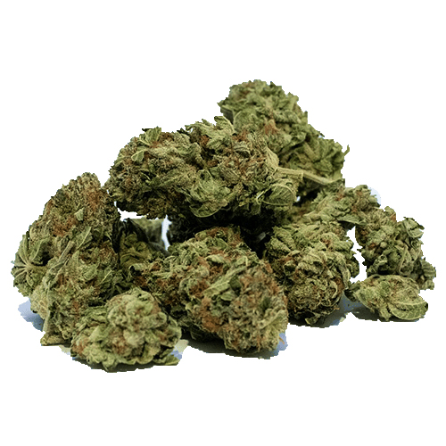
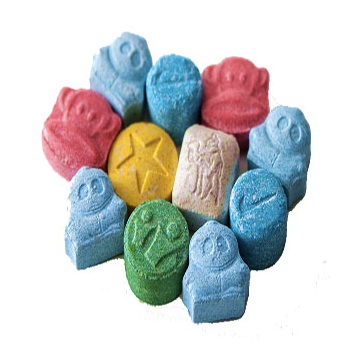
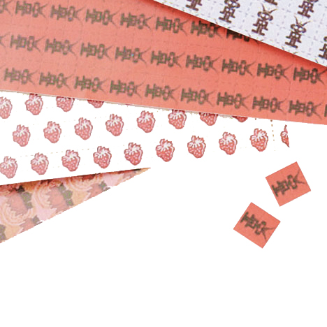
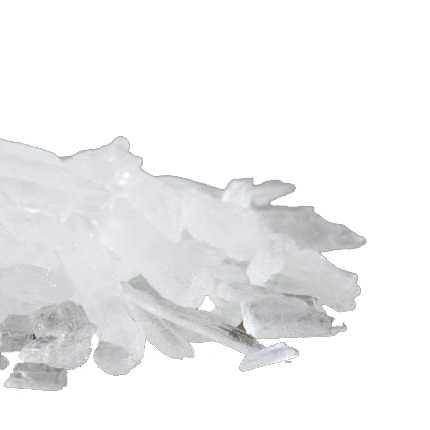
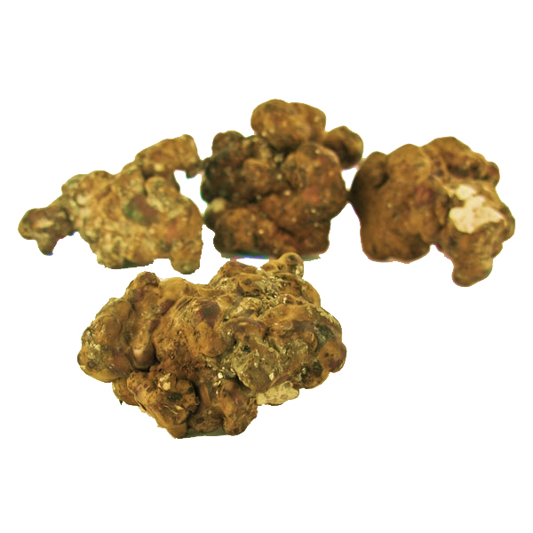
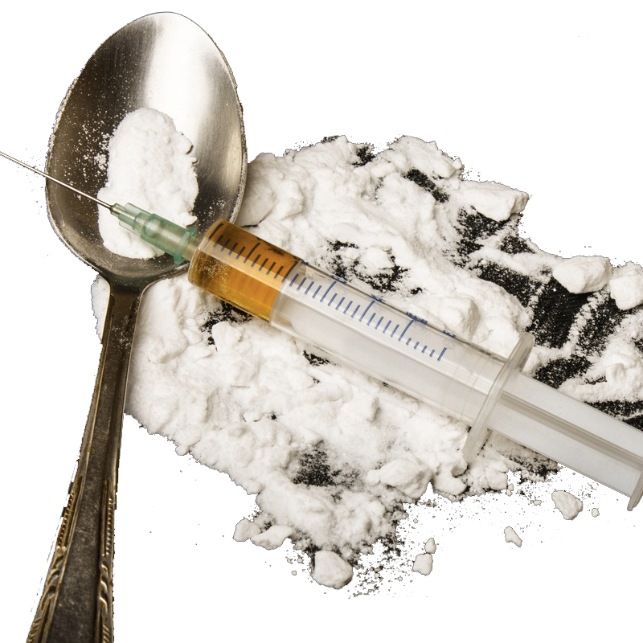
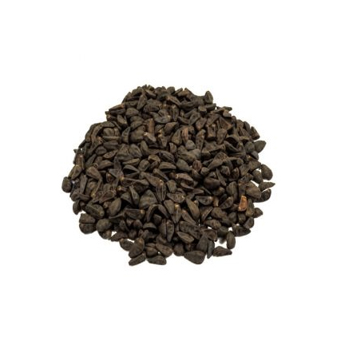

(cannabis)
The demand for cannabis around the world, coupled with the drug's relative ease of cultivation, makes the illicit cannabis trade one of the primary ways in which organized criminal groups finance many of their activities.
(pharmaceuticals)
It is cheaper to buy prescription drugs from the darknet markets rather than pharmaceutical companies. Hence, for those who with financial troubles, price can be a determining factor for where to purchase prescription drugs from.

(mdma)
According to a study conducted in 2015 (referenced in the EMCDDA report) of about 16 marketplaces that functioned in the dark web, over a quarter of the drug demand in these markets is for ecstasy.

(lsd)
The advent of darknet markets means that high-quality LSD online is affordable and accessible. During November 2015, approximately $215,000 worth of LSD was sold on the AlphaBay Market.

(methamphetamine)
As crystal methamphetamine and ice usage and dealings are on the rise, authorities are attempting to counteract them through tightened surveillance measures.

(mushrooms)
Although there are many sellers on Dream Market with a variety of different strains, Mushrooms4u and Golden Teacher Magic Mushrooms are particularly reputable.

(heroin)
Many authorities tracking the traffic say that dark web markets have quickly assumed a more prominent and frightening role in distributing heroin and synthetic opioids.

(seeds)
Albeit legal in many places and can be bought over the counter, most people in the United States do not live in a medical state, and purchase via the darknet because it avoids all of the pitfalls of the legal trade in seeds.
(video games)
While drugs dominate the numbers of listings, users also can buy a vast array of digital goods. This includes pirated software, video games, unreleased movies, books, and music, and stolen accounts to streaming video sites like Netflix.